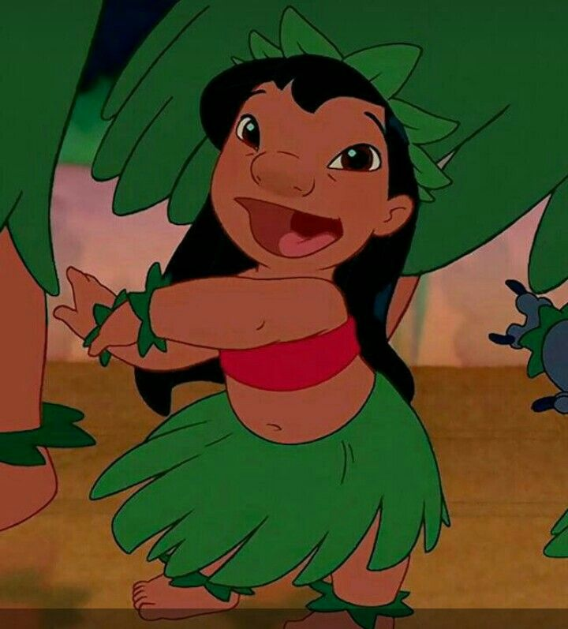
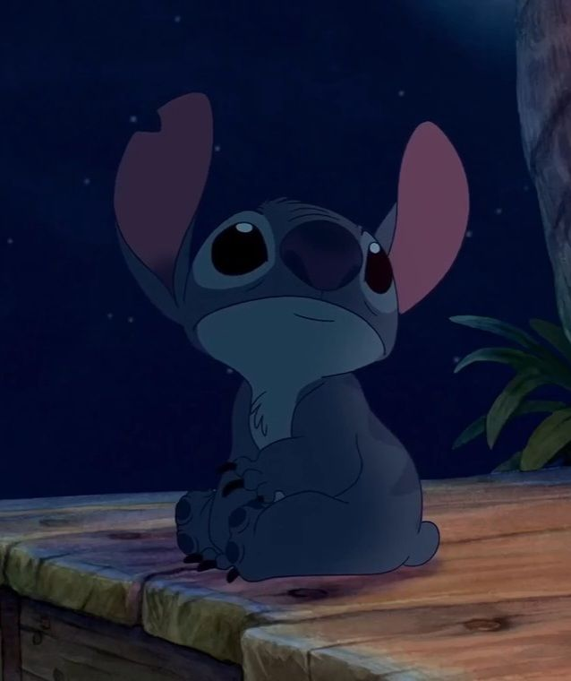

Nani
Nani Pelekai is the strong-willed and big-hearted older sister who is forced into adulthood way before she is ready. After losing her and Lilo's parents to a car crash, she becomes Lilo's guardian who cares about nothing more than staying together with her little sister, despite the challenges and chaos that follows her.

Lilo
Lilo Pelekai is the chaotic and stubborn, odd little girl of which the storyline follows. Her emotions are very strong and in the best way, and although she is stubborn, it is matched with her compassion which is the exact reason for why she embraces Stitch before everyone understood him enough to.

Stitch
Stitch, also known as Experiment 626, is a ball of destruction that later becomes 'ohana and Lilo's best friend. Built for chaos and destruction he's impulsive, strong, and mischievous, but underneath all of it lies a creature desperate to belong. From a runaway experiment to a loyal member of Lilo's 'ohana, he shows everyone that even the most unlikely people can choose family.